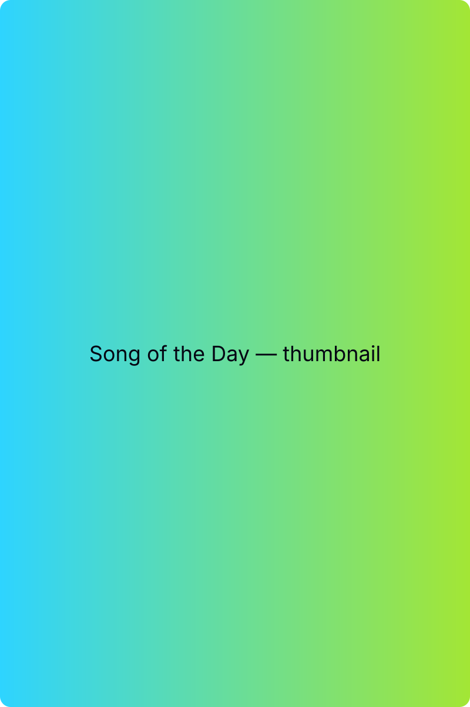

Song of the Day
A cozy, low-pressure social app where you share one song a day with friends.
What’s your song of the day?

How It Works
One Song a Day
Pick your favorite song once per day and post it. No long captions, no big performance—just music.
Your Music, Over Time
Automatically build weekly and monthly calendars that show what you were listening to at different moments in your life.
Stay in Touch, Effortlessly
Follow friends, see their songs in a gentle feed, tap to like tracks you love, and get notified when you pick the same songs or artists.
About the App
Song of the Day is designed to feel like a small daily ritual. You open the app, post your song, see what your friends chose, and move on with your day.
There is a simple follow system and you can see who you’re connected with, but follower counts are tucked away inside a connections screen instead of being front and center. Likes exist as a light way to say “I heard this” or “I like this,” not as a scoreboard to chase.
Over time, your songs turn into a visual archive—calendars and stats that make it easy to remember what you were listening to during different months, seasons, or phases of your life.
A Softer Way to Share Music
Song of the Day is currently in private beta with friends and family and is preparing for release on iOS and Android (Q1 2026).